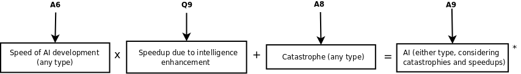

In A6 you were given your probability for the creation of AI of either the neuromorphic or non-neuromorphic type by various times in the future.
The five subquestions in Q9 collected information about the speedup to AI research capabilities that would result from either iterated embryo selection or other methods of intelligence enhancement. The speedup factor is used to shorten the time in which your stated distribution of times for AI development is reached, as though time were running faster. Like elsewhere in The Uncertain Future, this is done probabilistically. There isn't a single speedup factor; rather, there is a probability distribution over different speedup factors that might occur.
A8 showed your estimate that a catastrophe of any sort will halt progress.

The information from A8 and Q9 can be used to amend the probability over time of creating AI to also consider catastrophes that might halt progress in science, and intelligence enhancement technologies that might speed up research.
*The probabilities aren't just added, take a look at the gory math version for more detail.